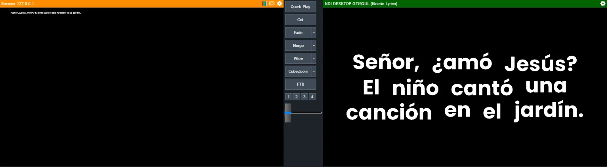
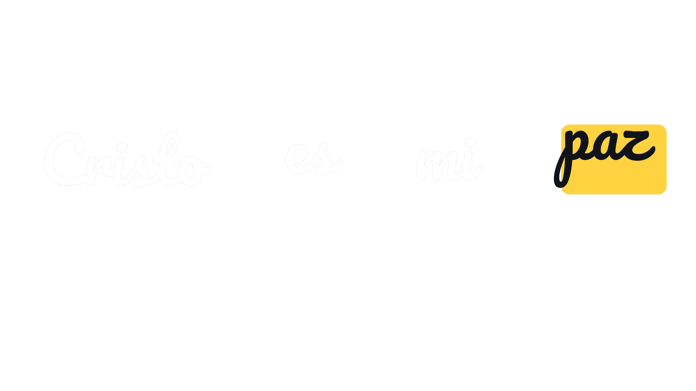
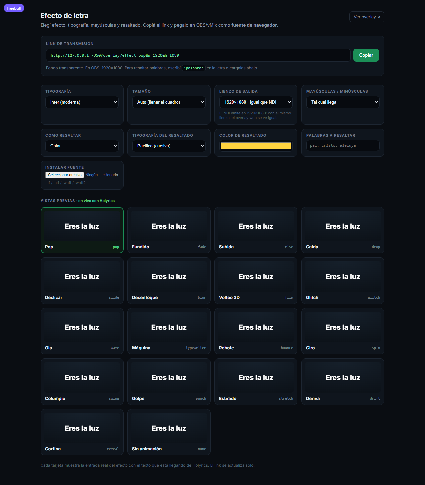
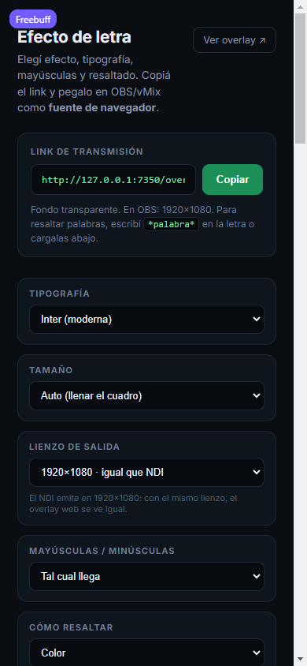

HolyBridge Pro lee lo que Holyrics está mostrando y lo empuja a la pantalla
en milisegundos, palabra por palabra. Dos salidas idénticas: overlay web
con fondo transparente y emisor NDI con canal alfa, para OBS, vMix y Resolume.
6.5.6 · Windows 10/11 · instalador (110 MB) o portable (ZIP)
Overlay web · 1920×1080
NDI · Kinetic Lyrics
Las dos salidas reciben el mismo texto, el mismo efecto y el mismo lienzo.
Salidas
Una sola letra, dos pantallas iguales
El overlay web y el emisor NDI comparten composición: mismo tamaño de letra,
misma línea base, mismos colores. Lo que ajustás en el panel se ve igual en
las dos salidas.
Web Overlay transparente
Fuente de navegador en OBS, vMix, Streamlabs o cualquier software que acepte
una URL. Fondo transparente real, sin recuadro negro ni croma.
Link listo para copiar desde el panel
1920×1080 por defecto, también 1280×720, vertical y 4K
Se adapta al tamaño del input sin cambiar la composición
NDI Emisor con alfa
Un ejecutable propio publica la fuente Kinetic Lyrics en la red.
OBS, vMix y Resolume la detectan como cualquier otra cámara NDI, con transparencia
(en Resolume Arena / Avenue, como clip NDI de la composición).
No requiere Python instalado
Cuadro fijo 1920×1080, palabras sobre la misma línea base
Se prende y apaga desde la ventana del programa
Entra en Resolume sin placa de captura

vMix con el input Browser: 127.0.0.1 a la izquierda y la fuente NDI a la derecha.
Animaciones
18 entradas, palabra por palabra
Cada palabra entra con su propio retardo. Todo se anima con
transform y opacity, así que el movimiento no cuesta FPS
ni retrasa el texto en vivo. Las tarjetas de abajo son la animación real,
no un video.
Pasá el mouse por una tarjeta para volver a verla.
Tipografías
Ocho estilos, y las tuyas
Cambiá la letra desde el panel y el link se actualiza solo. También podés subir
un .ttf, .otf o .woff2 y usarlo al instante en las dos salidas.
Mayúsculas a tu gusto
Tal cual llega de Holyrics, TODO EN MAYÚSCULAS, todo en minúsculas o Camel Case.
Tal cualTODO EN MAYÚSCULASCamel Case
Color y contorno
Color del texto, color de resaltado, contorno y sombra para que la letra se lea sobre cualquier fondo.
Resaltados
Siete formas de destacar una palabra
Escribí *palabra* en la letra o cargá una lista en el panel.
El resaltado viaja con el texto a la web y al NDI.
Lienzo
El tamaño dejó de ser una lotería
El overlay ya no se encoge ni salta de tamaño cuando cambia la letra. Se dibuja
sobre un lienzo fijo y se escala por CSS, así que la composición es siempre la misma.
Lienzo fijo, igual que NDI
Por defecto 1920×1080, el mismo cuadro que emite el NDI. También 1280×720,
1080×1920 vertical, 4K y modo “ventana” para el navegador.
1920×1080 · igual que NDI1280×7201080×1920 · vertical3840×2160 · 4KVentana
Tamaño automático o en píxeles
En automático, la letra ocupa todo el ancho disponible del lienzo y baja de
tamaño si el renglón es largo. Si preferís control total, elegí 70, 95, 120,
150, 190, 240 o 300 px.
Sin saltos al cambiar de estrofa
Se recalcula al cambiar el tamaño de la ventana
Los renglones de Holyrics se respetan

Cuadro 1920×1080 renderizado por el emisor NDI: tildes, ñ y todas las palabras apoyadas en la misma línea base.
Holyrics
Se conecta solo y entiende el español
El bridge consulta /view/text.json de Holyrics cada 60 ms y empuja el
cambio por SSE: la letra aparece en el mismo instante en que la mostrás.
Acentos y ñ
Holyrics manda ñ, ó y ¿: la tabla latina completa se decodifica, con mayúsculas y minúsculas.
Renglones respetados
Si Holyrics manda dos líneas, se ven dos líneas. La letra se achica antes que reacomodar el texto.
IP compartida
La IP de Holyrics que cargás en la ventana del programa es la misma que usa Kinetic Lyrics.
Panel en el celular
El panel de configuración se abre desde cualquier PC o teléfono de la red y muestra las 18 animaciones en vivo.
Autoarranque
La ventana puede levantar el bridge y el emisor NDI sola, y cerrarlos cuando salís.
Sin Python
Todo viene compilado en el instalador: Node embebido, bridge, emisor NDI y la interfaz.

El panel real: link listo para copiar, tipografía, tamaño, lienzo de salida, mayúsculas,
resaltado y las 18 animaciones con el texto que está llegando de Holyrics.

El mismo panel desde el celular, en la red local.
Instalación
De cero a aire en tres pasos
1
Instalá y abrí HolyBridge
Doble clic en el instalador. En la ventana, cargá la IP de Holyrics y prendé el bridge.
2
Pegá el link en OBS, vMix o Resolume
Fuente de navegador → http://127.0.0.1:7333/ → 1920×1080, fondo transparente. El panel está en /config. En Resolume, sumá la fuente NDI y ponela sobre la composición.
3
Prendé el NDI si lo querés
Switch NDI · letras cinéticas y elegí la fuente Kinetic Lyrics en tu software.
Última versión
HolyBridge Pro 6.5.6
Lienzo fijo de 1920×1080, letras alineadas en el NDI, tildes y ñ corregidas y
renglones de Holyrics respetados.